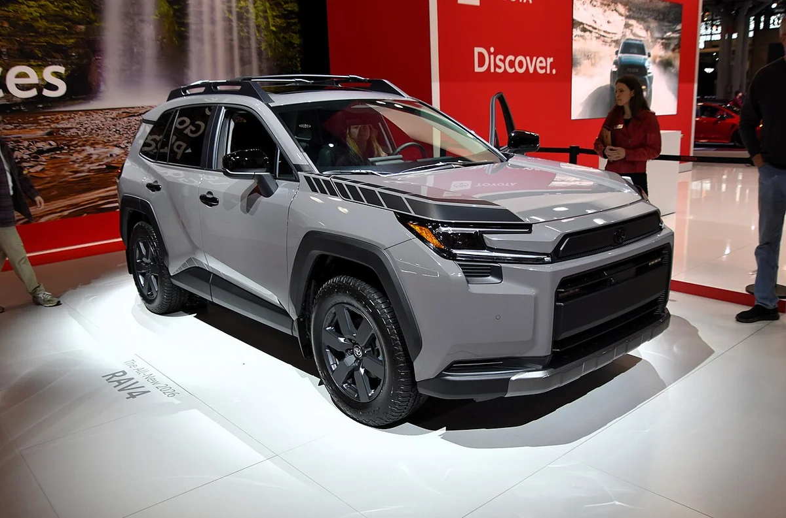
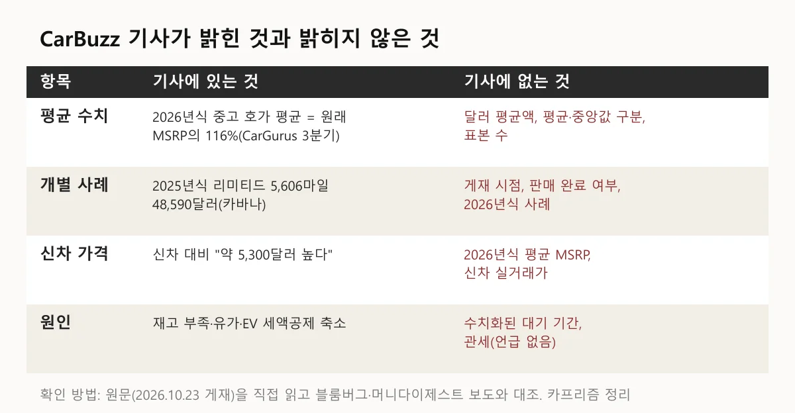
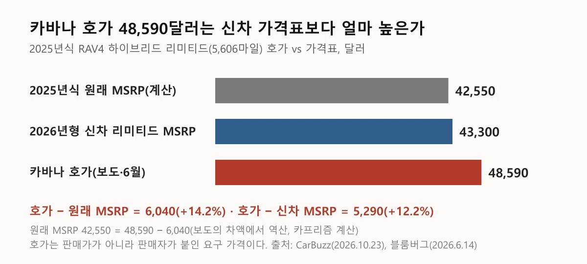
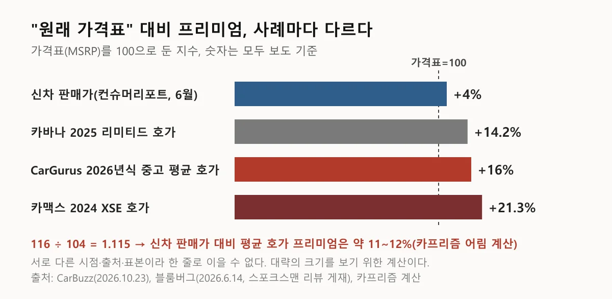
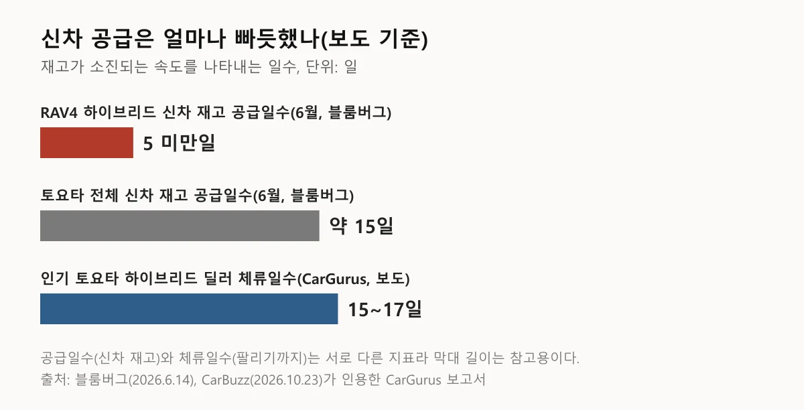
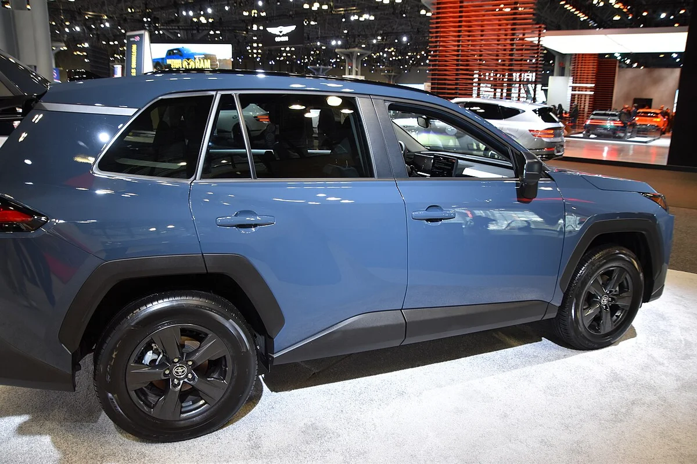
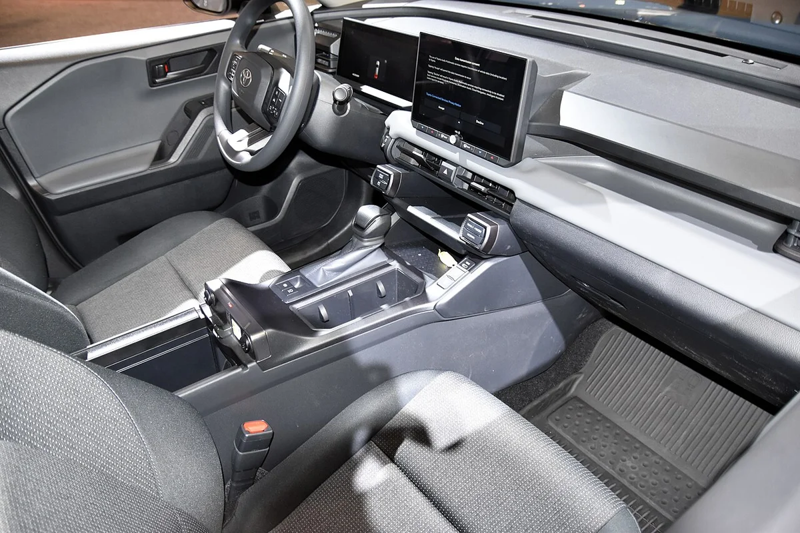
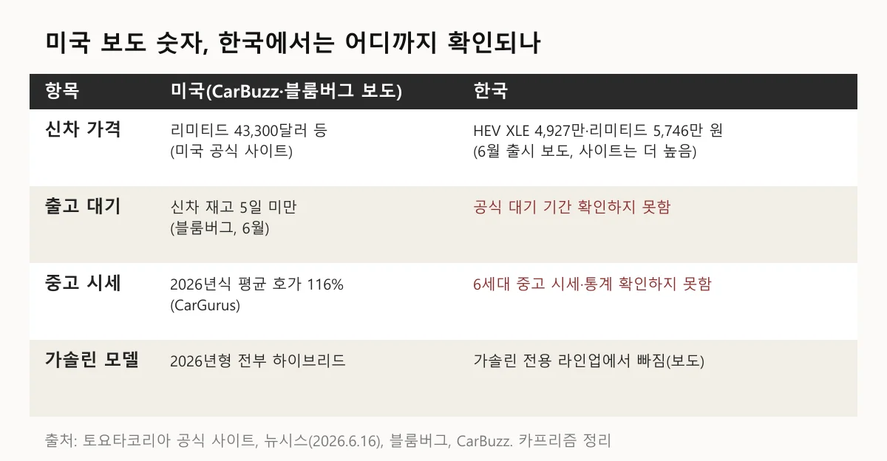
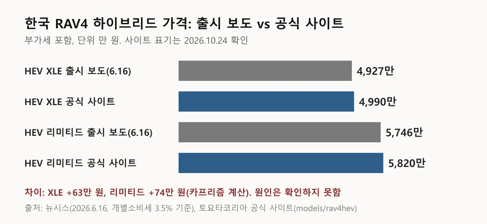
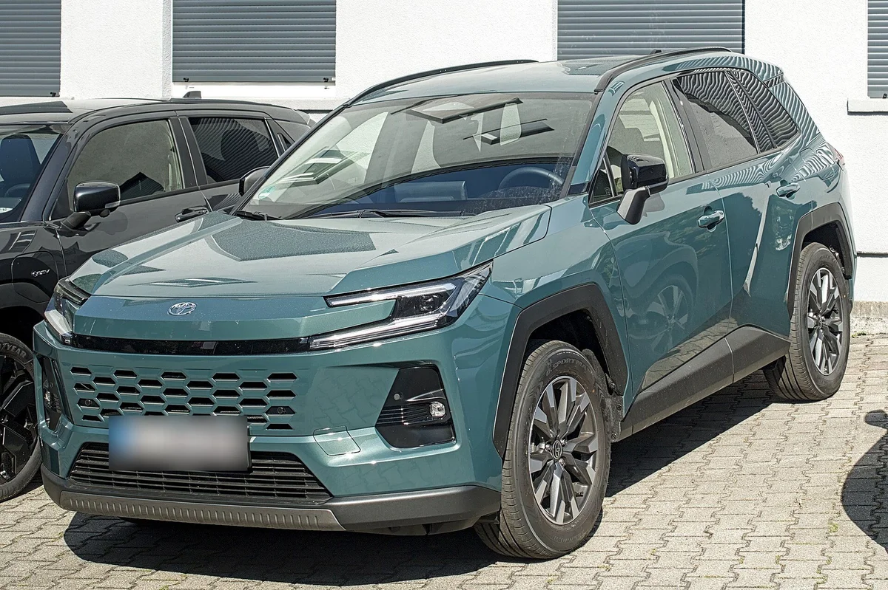

▲ 6세대 RAV4 우드랜드 하이브리드(2026년형) 전시 차량(2026년 4월 촬영) ⓒ Charles from Port Chester, New York, Wikimedia Commons (CC0)
"새 차보다 중고가 더 비싸다는데, 그 말 그대로 믿어도 되나?" 미국 매체 CarBuzz가 2026년 10월 23일 "중고 2026년형 RAV4 하이브리드가 신차보다 비싸게 팔린다"고 보도하면서 이 말이 퍼지고 있다. 그런데 기사 숫자를 하나씩 보면 달러 사례는 한 대뿐이고, 그것도 "팔린 가격"이 아니라 "붙은 가격"이다.
이 글은 CarBuzz 원문(Wilhelm Lutjeharms 기자)의 수치를 먼저 정리하고, 같은 사례가 처음 나온 블룸버그 기사(Chester Dawson, LA 타임스 2026년 6월 8일 게재)와 머니다이제스트 보도(2026년 10월 11일)로 대조한 뒤, 한국에서 확인되는 것과 확인하지 못한 것을 분리했다. 모든 미국 수치는 "보도 기준"이고 2026년 10월 24일 기준으로 확인했다.
정정 안내(2026-10-24): 발행 직후 LA 타임스 원문을 열어 확인하고 두 곳을 바로잡았습니다. 이 글이 "블룸버그"와 "LA 타임스"를 별개 출처처럼 쓴 부분은 같은 기사(블룸버그 체스터 도슨 기자)이며, CarBuzz가 LA 타임스 수치로 적은 "약 5,300달러"는 LA 타임스 문장이 아니라 호가 48,590달러에서 신차 스티커 43,300달러를 뺀 CarBuzz의 계산이었습니다.
1. CarBuzz 원문이 실제로 제시한 숫자는 이것이 전부다
원문이 직접 밝힌 수치는 116%, 48,590달러, 6,040달러, 약 5,300달러, 5,606마일, 15~17일 정도이고, 대부분 다른 기관·매체 인용이다. 원문에 iSeeCars는 나오지 않고, 데이터 출처는 CarGurus(3분기 보고서)·콕스 오토모티브·LA 타임스 인용으로 표기돼 있다.
| 항목 | 원문 수치 | 원문이 밝힌 출처 |
|---|---|---|
| 2026년식 중고 RAV4 평균 호가 | 원래 MSRP의 116% | CarGurus 2026 3분기 보고서 |
| 예시 차량 | 2025년식 RAV4 하이브리드 리미티드, 5,606마일, 48,590달러 | 카바나 목록(LA 타임스 인용) |
| 예시 차량 vs 원래 MSRP | 6,040달러 높음 | LA 타임스 인용 |
| 예시 차량 vs 신차 2026년형 | "nearly $5,300" 높음 | LA 타임스 인용으로 표기됐지만, LA 타임스 원문에는 신차 리미티드 스티커 43,300달러만 있고 5,300달러는 차액 계산(48,590−43,300=5,290) |
| 인기 토요타 하이브리드 딜러 체류 | 15~17일 | CarGurus |
| 신차 재고 | 토요타·렉서스·혼다가 가장 빠듯한 축 | 콕스 오토모티브(7월 재고 보고서 링크) |
숫자가 이렇게 적은 이유는 기사가 외부 데이터를 요약한 짧은 보도이기 때문이고, 그래서 "평균이 얼마이고 몇 대를 봤는가"를 독자가 직접 판단할 근거가 없다. 헤드라인이 본문 근거보다 넓다는 점은 뒤에서 짚는다.

▲ 원문이 밝힌 것과 밝히지 않은 것(카프리즘 정리)
2. "신차보다 비싸다"의 달러 근거는 2025년식 1대, 그것도 6월 호가다
원문의 "신차보다 약 5,300달러 높다"는 카바나가 올린 2025년식 리미티드 한 대의 호가를 신차 2026년형 가격과 비교한 값이다. 같은 사례는 CarBuzz가 출처로 단 LA 타임스 기사(2026년 6월 8일)에 이미 나온다. 이 기사는 블룸버그 체스터 도슨 기자의 글이고 스포크스맨 리뷰에는 6월 14일 재게재됐으니, LA 타임스와 블룸버그는 별개의 확인이 아니라 같은 기사다. 기사에는 카맥스의 2024년식 XSE(29,000마일)가 38,735달러 가격표에서 약 21% 높은 46,998달러로 올라와 있다는 사례도 있다.
카프리즘 계산으로 보면 48,590달러에서 6,040달러를 빼면 원래 MSRP가 42,550달러다. 신차 2026년형 리미티드 스티커 가격 43,300달러는 LA 타임스 기사에 직접 적혀 있다(토요타 미국 사이트는 이번에도 403으로 열리지 않아 직접 대조하지 못했다). 차액은 5,290달러로 CarBuzz의 "약 5,300달러"와 맞는데, 이 숫자는 기사 속 문장이 아니라 계산 결과다.
| 구분 | 금액(달러) | 비고 |
|---|---|---|
| 카바나 호가(2025년식 리미티드) | 48,590 | 5,606마일, 보도 기준 호가 |
| 원래 MSRP(역산) | 42,550 | 48,590 − 6,040 |
| 2026년형 신차 리미티드 MSRP | 43,300 | LA 타임스(블룸버그) 6월 8일 기사 기재 |
| 호가 − 신차 MSRP | 5,290 | 12.2% 높음 |
같은 호가라도 연식이 한 해 다른 차를 신형 가격표와 맞대는 구조라서, 호가가 높다는 사실과 "2026년형 중고가 신차보다 비싸다"는 말 사이에는 한 단계 간격이 있다.

▲ 카바나 호가와 가격표의 달러 차이(보도 기준, 계산은 카프리즘)
▲ 신형 RAV4 하이브리드 Z(일본 사양). 미국 LE·리미티드나 한국 XLE·리미티드와 사양이 다르다 ⓒ TTTNIS, Wikimedia Commons (CC0)
3. 평균 116%는 얼마를 뜻하나: 신차 판매가와 견주면 격차가 줄어든다
116%는 2026년식 중고 호가가 원래 가격표보다 평균 16% 높다는 뜻이고, 기본형 31,900달러에 대입하면 약 37,004달러다. 머니다이제스트(콜린 보이드 기자, 2026년 10월 11일, AOL 게재)도 "10월 CarGurus 보고서 기준 입문형 중고 평균 약 37,000달러, 2026년형 시작가 31,900달러"라고 적었다. 다만 두 보도 모두 같은 CarGurus 보고서에 기대고 있어 서로 독립된 확인은 아니다. GCN(10월 13일)과 오토가이드(10월 9일)도 3분기 보고서의 116%를 똑같이 전하며 RAV4 딜러 재고 회전 15.6일을 덧붙였지만, 평균인지 중앙값인지와 표본 수는 어디에도 없다. 머니다이제스트만 16%를 상반기 판매 수치 기준이라고 적어 시점 표기가 엇갈린다.
6월 8일 기사는 이보다 앞선 CarGurus 자료로, 2024년식 이후 중고 RAV4 하이브리드는 모든 트림이 원래 MSRP의 90% 이상에 올라 있고 2025년식 하이브리드 7개 트림 중 4개는 원래 스티커 가격보다 비싸다고 전했다. 즉 116%는 2026년식 평균이고, 한 해 오래된 차는 100% 안팎에서 갈린다는 뜻이다.
하나 더 볼 수치는 신차 판매가다. LA 타임스·블룸버그 6월 8일 기사는 컨슈머리포트 블로그(Jeff Bartlett 편집장)를 인용해 신차 2026년형 RAV4가 가격표보다 약 4% 높게 팔린다고 전했다. 컨슈머리포트 원문은 회원 전용이라 직접 열어 보지 못했다. 이 값을 그대로 쓰면 116 ÷ 104 = 1.115, 즉 신차 판매가 기준으로는 평균 호가 프리미엄이 약 11~12%다. 시점과 출처, 표본이 다른 숫자를 이은 어림 계산이고, 4%가 리미티드 같은 상위 트림에도 같은지는 확인하지 못했다.
| 사례 | 지수 | 기준 시점·출처 |
|---|---|---|
| 신차 2026년형 판매가 | 약 104 | 컨슈머리포트, 블룸버그 6월 인용 |
| 카바나 2025 리미티드 호가 | 약 114.2 | 48,590 ÷ 42,550(카프리즘 계산) |
| 2026년식 중고 평균 호가 | 116 | CarGurus 2026 3분기(CarBuzz 인용) |
| 카맥스 2024 XSE 호가 | 약 121.3 | 46,998 ÷ 38,735, 블룸버그 6월 |
사례마다 지수가 114~121로 흩어지는 이유는 트림, 주행거리, 판매 채널, 호가 시점이 제각각이기 때문이다. 평균 116은 이 사이에서 하나의 대푯값일 뿐 모든 중고차가 그렇다는 뜻은 아니다.
카프리즘 시선
이번 보도에서 확인되는 사실은 "중고 호가가 가격표를 웃돈다"이지, "중고가 신차보다 훨씬 비싸게 거래된다"가 아니다. 평균 116%는 가격표 기준이고, 신차도 가격표보다 약 4% 높게 팔린다고 보도돼 있어 신차 대비로 보면 격차는 약 11~12%로 줄어든다(어림 계산).
또한 달러로 확인된 사례(114.2, 121.3)는 모두 한 대씩의 호가다. 그래서 같은 헤드라인이라도 "평균이 그렇다"와 "그런 호가가 있다"는 서로 다른 강도의 주장이라는 점은 수치로 확인된다.

▲ 가격표 대비 프리미엄(보도 기준, 카프리즘 어림 계산)
4. 왜 이런 역전이 생기나: 원문과 블룸버그가 든 이유
보도가 든 이유는 신차 재고 부족, 세대 교체 공백, 하이브리드 쏠림 세 가지다. 원문은 콕스 오토모티브(Cox Automotive)가 토요타·렉서스·혼다를 신차 재고가 가장 빠듯한 브랜드로 꼽았다고 전하고, 휘발유 가격 상승과 연방 전기차 세액공제 축소가 구매자를 하이브리드로 밀었다고 설명한다.
- 재고: LA 타임스(블룸버그) 6월 8일 기사는 토요타의 신차 RAV4 하이브리드 재고가 5일치 미만이고 토요타 전체는 약 15일치라고 전했다(6월). CarGurus는 인기 토요타 하이브리드가 딜러 매장에 15~17일만 머문다고 했다
- 세대 교체: 같은 기사에 따르면 토요타가 5세대 RAV4 생산을 멈추고 6세대를 아직 늘리지 못한 상태였고, 2026년형부터 비하이브리드 RAV4를 단종했다. 토요타 북미 제품기획 책임자는 "매우 방법론적인 속도로 증산하고 있다"며 부족이 완화될 것이라고 밝혔다
- 수요: 같은 기사는 이란 전쟁으로 유가가 급등해 휘발유가 전국 평균 갤런당 4달러를 넘었다고 전했고(CarBuzz는 9월 말 평균을 약 4.40~4.48달러로 적었다), 하이브리드는 연비가 40mpg 이상이라 신차 평균 27.2mpg와 격차가 크다고 썼다
관세는 이번 원문과 블룸버그 기사 어디에도 RAV4 가격 원인으로 나오지 않는다. 구조를 설명하려고 관세를 덧붙이면 보도에 없는 인과를 만드는 것이라서 이 글은 쓰지 않았다.

▲ 재고 소진 속도 관련 보도 수치(블룸버그·CarGurus, 서로 다른 지표)

▲ 6세대 RAV4 우드랜드 하이브리드 실내(전시 차량, 2026년 4월 촬영) ⓒ Charles from Port Chester, New York, Wikimedia Commons (CC0)
5. 아쉬운 점·주의할 점: 원문 숫자를 그대로 쓰기 어려운 이유
가장 큰 한계는 "selling for(팔리고 있다)"라는 헤드라인과 달리 근거가 판매가가 아니라 호가라는 점이다. 호가는 판매자가 부른 가격이라 실제로 그 값에 팔렸는지는 별개다.
- 호가와 거래가: 116%와 48,590달러 모두 목록(리스팅) 가격이다. 낙찰·계약 가격 통계는 제시되지 않았다
- 연식: 헤드라인은 2026년형인데 달러 사례는 2025년식 리미티드다
- 평균 방식·표본: 116%가 평균인지 중앙값인지, 몇 대를 본 값인지 기사에 없다
- 시점: 달러 사례는 LA 타임스·블룸버그 6월 8일 기사에 이미 있던 목록이다. CarBuzz 10월 23일 기사가 이를 새로 확인했다는 언급은 없어 4개월 반 전 호가가 그대로 쓰였을 수 있다
- 지역: 116%의 집계 범위(전국인지 지역인지)가 기사에 밝혀지지 않았다
- 원출처: LA 타임스 원문은 직접 확인했다. CarGurus 3분기 보고서 원본은 접속이 막혀(406) 열지 못했고, GCN·오토가이드 등 2차 보도로 116%를 대조했다
- 거래 현장의 말: 같은 6월 기사에서 오클라호마 딜러는 "대부분은 원래 MSRP보다 비싸게 팔지 않는다"고 했다. 호가와 실제 거래가가 다를 수 있다는 뜻이다
이 한계들은 원문의 방향(중고 호가가 가격표를 웃돈다)이 틀렸다는 뜻이 아니다. 머니다이제스트와 블룸버그도 비슷한 방향을 전한다. 다만 "신차보다 비싸다"를 일반화된 사실로 쓰기에는 근거의 단위가 작다는 뜻이다.

▲ 6세대 RAV4 LE 하이브리드 AWD(2026년형, 전시 차량). 한국 판매 트림과 다르다 ⓒ Charles from Port Chester, New York, Wikimedia Commons (CC0)

▲ 6세대 RAV4 LE 하이브리드 AWD 실내(전시 차량) ⓒ Charles from Port Chester, New York, Wikimedia Commons (CC0)
6. 한국에서는: 신차 가격은 확인되고, 대기와 중고 시세는 확인되지 않는다
한국에서는 6세대 RAV4가 하이브리드 2개 트림·PHEV 2개 트림으로 2026년 6월 16일 정식 출시됐고, 가솔린 전용은 라인업에서 빠졌다. 뉴시스 보도 기준 HEV XLE 4,927만 원, HEV 리미티드 5,746만 원, PHEV XSE 6,160만 원, PHEV GR 스포츠 6,180만 원(부가세 포함, 개별소비세 3.5% 기준)이다.
토요타코리아 RAV4 하이브리드 공식 페이지(2026년 10월 24일 확인)에는 HEV XLE 4,990만 원(전륜구동, 시스템 출력 230PS)과 HEV 리미티드 5,820만 원(사륜구동, 239PS)이 표기돼 있어, 출시 보도보다 각각 63만 원, 74만 원 높다. 두 트림 모두 약 1.28% 높은 일정한 비율(4,990÷4,927, 5,820÷5,746, 카프리즘 계산)이라 트림별 옵션 차이는 아닌 것으로 보이지만, 가격 조정인지 세율·표기 기준 차이인지 원인은 확인하지 못했다. 사이트에는 부가세 포함이라는 표기와 "예고 없이 변경될 수 있다"는 안내(2026년 7월 작성 기준)만 있고 개별소비세율은 적혀 있지 않으며, 인도 일정이나 대기 기간 안내도 없었다.
| 트림 | 출시 보도(6.16) | 토요타코리아 사이트 | 차이 |
|---|---|---|---|
| HEV XLE | 4,927 | 4,990 | +63 |
| HEV 리미티드 | 5,746 | 5,820 | +74 |
한국 독자가 "미국처럼 중고가 신차보다 비싼가"를 확인하려면 같은 연식·트림의 신차 가격표와 중고 호가를 맞대야 하는데, 6세대 RAV4는 출시 4개월 남짓이라 공개된 중고 시세·통계를 찾지 못했다. 5세대 RAV4 이하 이전 세대의 한국 중고 시세도 이번에 공식·공개 통계로 확인하지 못해, 이 글은 한국 값을 추정하지 않는다.

▲ 미국 보도와 한국 확인 현황(카프리즘 정리)

▲ 한국 RAV4 하이브리드 출시 보도와 공식 사이트 표기(뉴시스·토요타코리아)

▲ 신형 RAV4 하이브리드 어드벤처 사양(2026년 2월 촬영 기재). 한국 판매 트림은 XLE·리미티드다 ⓒ TTTNIS, Wikimedia Commons (CC0)

▲ 신형(6세대) RAV4 코어 하이브리드(2026년 8월 촬영, 독일 현지 차량). 한국 사양과 다를 수 있고 번호판은 가림 처리했다 ⓒ Alexander Migl, Wikimedia Commons (CC BY-SA 4.0)

▲ 6세대 RAV4 우드랜드 하이브리드(2026년형) 전시 차량을 다른 각도에서 본 모습 ⓒ Charles from Port Chester, New York, Wikimedia Commons (CC0)
7. 한국 독자가 가져갈 것: 미국 숫자를 한국 가격표에 대입하지 않는 법
미국의 "중고 호가 > 신차 가격표"는 신차 재고 5일 미만, 휘발유 갤런당 4달러 초과, 세대 교체 공백이라는 미국 조건이 겹친 결과로 보도됐고, 한국에서 같은 조건이 있는지는 확인되지 않았다. 따라서 한국에서 RAV4를 살피는 사람이 챙길 것은 미국 헤드라인이 아니라 내 조건의 신차 가격표·출고 일정과 중고 호가를 같은 줄에 놓는 일이다.
✅ RAV4 신차와 중고를 비교하기 전 확인 질문 5가지
· 같은 트림·같은 구동 방식인가: 한국 판매 트림은 XLE 전륜구동, 리미티드 사륜구동이라 미국 LE·SE와 다르다
· 출시 보도 가격과 공식 사이트 표기 중 어느 쪽 기준인가: 현재 차이가 63~74만 원 난다
· 출고 일정을 공식 딜러에게 직접 확인했는가: 공식 사이트에는 대기 기간이 없다
· 중고 호가가 실제 거래가인가: 호가와 거래가를 구분해서 보고, 같은 연식·주행거리 여러 대를 확인한다
· 보증 승계·옵션 구성이 신차와 같은가: 조건이 다르면 가격 비교가 성립하지 않는다
한국 중고차 감가의 일반 흐름은 3년 감가율 순위 기사에서, 미국에서 RAV4가 5년 뒤에도 값이 덜 떨어졌다는 iSeeCars 데이터는 RAV4·4러너 5년 감가율 기사에서 따로 다뤘다. 이번 호가 얘기와 달리 그쪽은 5년 감가율을 직접 계산한 통계라서 성격이 다르다.
같은 미국 RAV4를 놓고 신차 쪽 가격 경쟁을 본 기사도 있다. 체로키 vs RAV4 리스 가격전쟁 기사는 신차 RAV4 LE 리스 월 379달러(보도 기준)를 다뤘고, 이번 기사의 "중고 호가가 가격표를 웃돈다"와 같은 시기 미국 시장의 반대쪽 풍경이다. 다른 모델의 중고 가치 이야기는 랜드크루저 감가 기사를 참고하면 된다.
8. 이번에 확인하지 못한 것
- CarGurus 2026 3분기 보고서 원본은 접속이 막혀 열지 못했다. 116%는 CarBuzz·GCN·오토가이드·머니다이제스트의 2차 보도에 기댄 값이고, 카바나 사례는 LA 타임스 원문으로 확인했다(보도 기준)
- 116%가 평균인지 중앙값인지, 표본 수, 전국 집계 여부는 원문에 없어 확인하지 못했다
- 카바나 호가 48,590달러가 현재도 유효한지, 실제 판매됐는지는 확인하지 못했다
- 토요타 미국 공식 사이트는 이번에도 접속이 거부돼(403) 리미티드 43,300달러는 공식 가격표가 아니라 LA 타임스 기사 기재값으로 확인했다
- 컨슈머리포트의 신차 약 4% 프리미엄은 6월 기사가 인용한 블로그 값이며, 원문(회원 전용)을 열지 못했고 리미티드 등 상위 트림에도 해당하는지, 10월 현재 값인지도 확인하지 못했다
- 한국 6세대 RAV4의 출고 대기 기간, 중고 시세·통계, 출시 보도 가격과 공식 사이트 표기 차이의 원인은 확인하지 못했다
9. 요약
CarBuzz의 헤드라인은 "중고가 신차보다 비싸다"지만, 원문 수치는 2026년식 중고 평균 호가가 원래 MSRP의 116%라는 CarGurus 값과 2025년식 리미티드 한 대의 호가 48,590달러(신차보다 약 5,300달러 높음)다. 달러 사례는 LA 타임스·블룸버그 6월 8일 기사에 이미 있던 목록이고, 평균·중앙값·표본·지역은 밝혀지지 않았다.
신차 판매가가 가격표보다 약 4% 높다는 보도를 쓰면 평균 호가 프리미엄은 신차 대비 약 11~12%로 줄어든다(어림 계산). 한국은 6세대 RAV4 하이브리드가 4,927만 원(출시 보도)·4,990만 원(토요타코리아 사이트)부터 정식 판매 중이지만, 출고 대기와 중고 시세는 공식·공개 통계를 확인하지 못해 미국 상황을 한국에 대입할 수 없다.